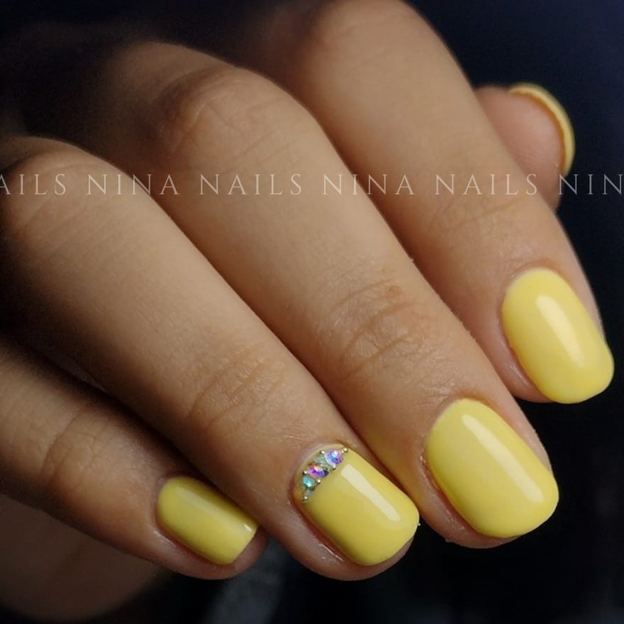
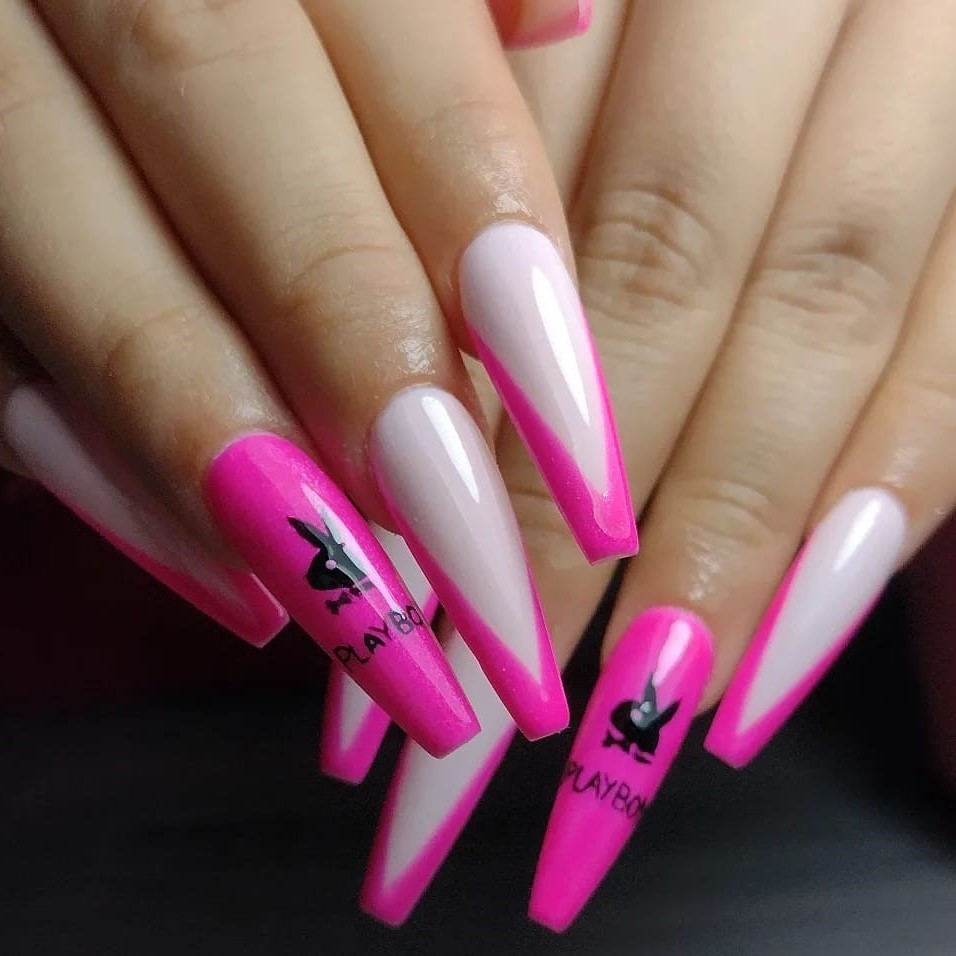
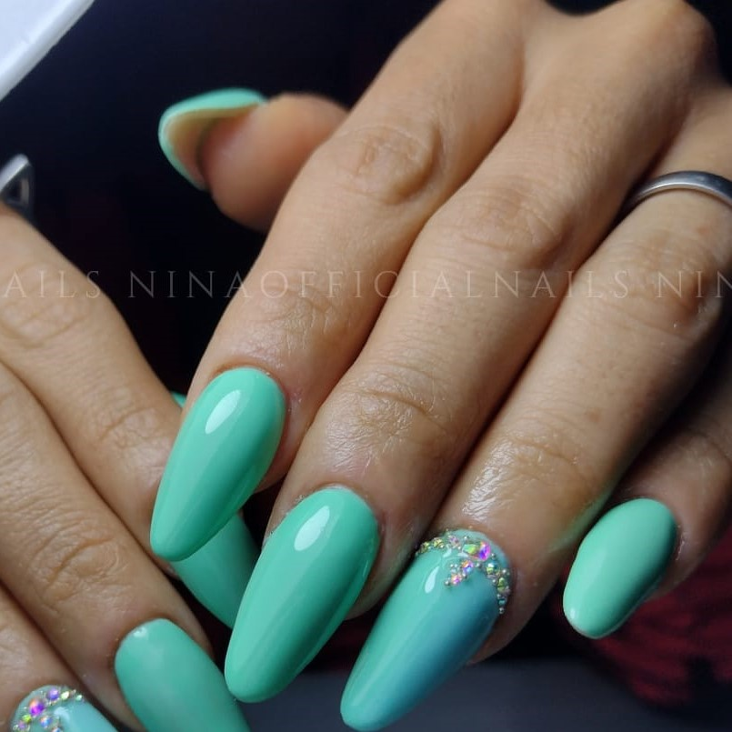

Servicios

- Esmaltado Semipermanente
- Descripción: Es un servicio que te permitirá tener tus uñas esmaltadas con el color y diseño que desees
- Duración: El turno tiene una duración de 1 hora e incluye manicura rusa e hidratación
- Durabilidad: La duración de dicho servicio es de 15 a 20 días
- Capping
- Descripción: Es un sistema de revestimiento en uñas, para aquellas clientas que deseen conservar un largo de uña natural
- Este servicio permitirá que tu uña crezca con fuerza sin inconvenientes como uñas escamadas, que se doblan o quebradizas
- Duración: El turno tiene una duración de 2 horas
- Durabilidad: La duración de dicho servicio es de 15 a 20 días

- Sistema A-Press
- Descripción: Dicho sistema trata de una extensión para las uñas con tips de gel. Apto para cualquier tipo de uña, permitiéndote tener el largo, color y diseño que desees
- Duración: El turno dura 2 horas e incluye manicuria rusa El mantenimiento debe realizarse a los 21 días máximo
- Durabilidad: Su duración es de 15 a 25 días
- Esculpidas en acrílico
- Descripción: Es un servicio que ofrece un alargamiento articificial con material acrilico permitiendote tener el color, diseño, largo y forma de uña que desees
- Duración: El turno tiene una duración de 1 hora y media a 2 horas y media
- - Dicho servicio incluye manicuria rusa y pulido de durezas
- Durabilidad: La duración de dicho servicio es de 15 a 23 días
- - Se recomienda realizar el mantenimiento de este servicio en un margen de 15 a 21 días como máximo

- Esculpidas en Polygel
- Descripción: Es un servicio que ofrece un alargamiento articificial con material de polygel Te permite tener el color, diseño y forma de uña que desees
- Duración: El turno tiene una duración de 1 hora y media a 2 horas y media
- Dicho servicio incluye manicuria rusa y pulido de durezas por distintos motivos.
- -Se recomienda realizar el mantenimiento de este servicio en un margen de 15 a 21 días como máximo
- Durabilidad: La duración de dicho servicio es de 15 a 23 días